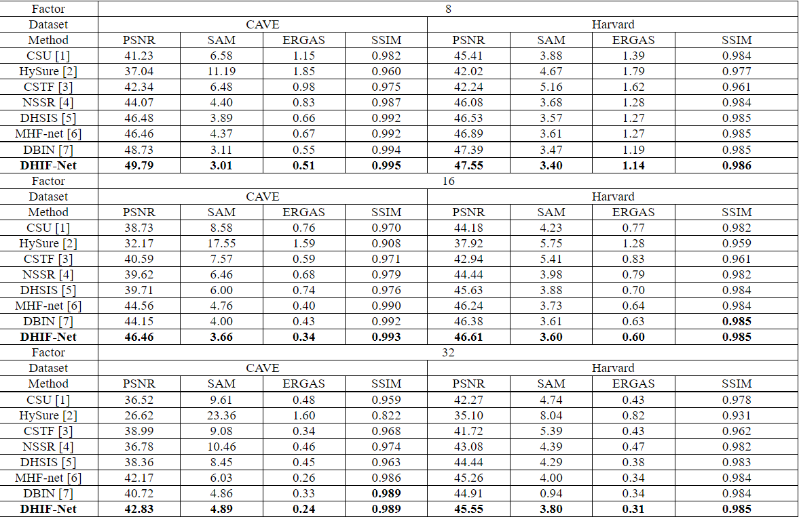

Abstract
Physical acquisition of high-resolution hyperspectral images (HR-HSI) has remained difficult, despite its potential of resolving material-related ambiguities in vision applications. Deep hyperspectral image fusion, aiming at reconstructing an HR-HSI from a pair of low-resolution hyperspectral image (LR-HSI) and high-resolution multispectral image (HR-MSI), has become an appealing computational alternative. Existing fusion methods either rely on hand-crafted image priors or treat fusion as a nonlinear mapping problem, ignoring important physical imaging models. In this paper, we propose a novel regularization strategy to fully exploit the spatio-spectral dependency by a spatially adaptive 3D filter. Moreover, the joint exploitation of spatio-spectral regularization and physical imaging models inspires us to formulate deep hyperspectral image fusion as a differentiable optimization problem. We show how to solve this optimization problem by an end-to-end training of a model-guided unfolding network named DHIF-Net. Unlike existing works of simply concatenating spatial with spectral regularization, our approach aims at an end-to-end optimization of iterative spatio-spectral regularization by multistage network implementations. Our extensive experimental results on both synthetic and real datasets have shown that our DHIF-Net outperforms other competing methods in terms of both objective and subjective visual quality.
Paper & Code & Demo
Experimental Results
Table 1. The average PSNR, SAM, ERGAS, and SSIM results of the test methods on the CAVE dataset and the Harvard dataset for Gaussian blur kernel and scaling factors 8/16/32.
Result Visualization

Figure 1. Visual comparison to other methods. The blur kernels are illustrated on the top left. Noise levels are set to 0 and 10 for scale factor ×2 and ×4, respectively.

Figure 2. Visualization results of different methods on real-world images upscaled by ×4.
Citation
@inproceedings{fang2022uncertainty,
title={Uncertainty Learning in Kernel Estimation for Multi-stage Blind Image Super-Resolution},
author={Fang, Zhenxuan and Dong, Weisheng and Li, Xin and Wu, Jinjian and Li, Leida and Shi, Guangming},
booktitle={European Conference on Computer Vision},
pages={144--161},
year={2022},
organization={Springer}
}
Concat
Zhenxuan Fang, Email: zxfang@stu.xidian.edu.cn
Weisheng Dong, Email: wsdong@mail.xidian.edu.cn
Xin Li, Email: xin.li@mail.wvu.edu
Leida Li, Email: ldli@xidian.edu.cn
Jinjian Wu, Email: jinjian.wu@mail.xidian.edu.cn
Guangming Shi, Email: gmshi@xidian.edu.cn
Comment